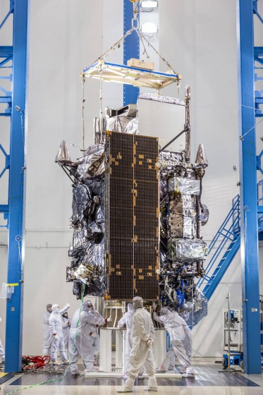
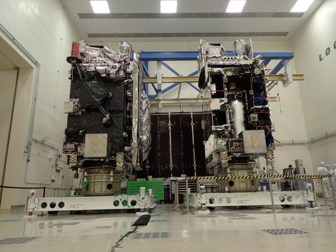

GOES-R
Em 6 de março de 2017, o último satélite meteorológico da Administração Oceânica e Atmosférica dos EUA, chamado GOES-16 (GOES-R), detectou incêndios no norte do Texas a partir do espaço – antes que os bombeiros na área recebessem chamadas do 911. A NOAA rapidamente alertou as autoridades locais, que começaram a evacuar as pessoas.{kind=link}
GOES-R
“Nós salvamos vidas”, diz Louis Uccellini , diretor do Serviço Nacional de Meteorologia da NOAA, “bem antes de termos sido operados”. Na verdade, a NOAA acabou de acessar as primeiras imagens do GOES-16 quando viu os incêndios florestais, enquanto O satélite ainda estava em fase de teste. Quatro dias depois, e o GOES-16 já mostrava seu potencial talvez o mais importante.

GOES East e GOES West em posição orbital

GOES-R (esquerda) e GOES-S (direita)
Os dois satélites – parte da chamada série GOES-R – são uma atualização muito necessária para os satélites meteorológicos antigos da NOAA, que atua nos anos 1990. “Muito poucas pessoas ainda têm uma televisão de tubo em sua casa; eles têm uma bela TV de tela plana “, diz Jordan Gerth , pesquisador meteorologista do Instituto Cooperativo de Estudos de Satélites Meteorológicos da Universidade de Wisconsin. “Então, o satélite antigo foi construído sobre essa tecnologia de televisão de tubo, e realmente não fornece uma imagem nítida que uma ótima TV de tela LCD ou plasma oferece hoje”.{kind=link}
GOES-R (esquerda) e GOES-S (direita)
Os satélites podem escanear nosso planeta cinco vezes mais rápido e quatro vezes a resolução da imagem como sondas anteriores. “A coisa mais emocionante sobre isso é a capacidade de tirar imagens rapidamente”, diz Gerth. A nave espacial pode ver características na atmosfera mudar a cada 30 segundos, enquanto anteriormente, o mais rápido que podíamos fazer era a cada cinco ou 15 minutos, diz Gerth. Isso permite aos meteorologistas seguir realmente o desenvolvimento de uma tempestade, como um furacão, em tempo quase real.
Quando o furacão Harvey atingiu o Texas em agosto de 2017 , por exemplo, os meteorologistas usaram dados oportunos e de alta resolução do GOES-16 para entender realmente a dinâmica da parede do olho de furacão e a rápida intensificação da tempestade. Esse tipo de informação permitiu previsões mais precisas, que foram fundamentais para a evacuação de pessoas. “Os primeiros atendentes saíram e resgataram mais de 200 pessoas que ficaram presas nas ilhas ao longo da costa do Texas”, disse Uccellini durante uma entrevista coletiva.
Os satélites irmãos também podem escanear a Terra em mais bandas espectrais do que as sondas anteriores – 16 total, das faixas visíveis a infravermelho e infravermelho próximo. Isso permite que os meteorologistas diferenciem diferentes tipos de nuvens, além de monitorar as altas temperaturas da nuvem, o que é necessário para prever o quanto a chuva cairá e se há risco de inundações instantâneas. Os satélites também acompanham o raio, bem como o tempo espacial que pode interferir com os sistemas GPS e redes elétricas aqui na Terra.
Agora levará 17 dias para o GOES-S chegar à órbita, e nesse ponto, ele será renomeado GOES-17. Será submetido a seis meses de testes e entrará em operação no final de 2018, de acordo com Tim Walsh , diretor do programa do sistema GOES-R. A NOAA planeja lançar mais dois satélites na série: GOES-T e GOES-U, que estão planejados para decolar em 2020 e 2024, respectivamente, e funcionarão como de reposição no espaço. Isso prolongará a vida da série GOES-R até 2036, com um orçamento de US $ 10,8 bilhões. “A série GOES-R é realmente um salto quântico acima de qualquer um dos seus predecessores da NOAA”, disse Steve Volz, diretor de serviços de satélites e de informação da NOAA, durante uma conferência de imprensa. “Isso significa que francamente mais vidas são salvas”.
Posts relacionados:
- Como o coletor de imagens do GOES-16 funciona
- As cores do satélite GOES-16
- O satélite GOES-13 encerra suas transmissões
Fonte:
01/Mar/2018 23:27:43